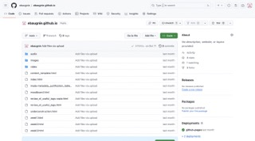

Week 3
IL task 1 : Identify key narrative points and create a plan
Like I explainded for the week 2, I wanna create an interactive way to discover the subject. The aim is to create self-reflection and self-assessment of the ability to recognise sexist or non-sexist advertising. What's more, this gaming aspect will capture the user's attention, so they may stay longer than on a simple blog. Of course, it would be important to create an additional page to the game, highlighting the impact of toy advertising on children.


IL task 2 : Incorporate the narrative plan into your portfolio
The overall story will therefore be one of questioning the consumer's ability to recognise what is sexist and what is not.
Lab Task : Git Hub
It was my first time creating a GitHub project. The interface is a bit complicated to understand the first time but fortunately I followed the laboratory. I would still need to be careful to upload all the documents and not just one as I did for the first change. As the project progressed, I found it easier and I understood the HTML code better, which gave me more confidence for the rest of the project.
My repository name is : "ebaugnie.github.io". So I uploaded all my documents to the git hub so that they would appear as a site. Git Hub link